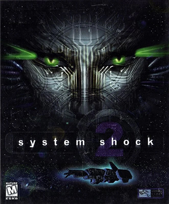

Description:
System Shock 2 is a 1999 action role-playing and survival horror video game designed by Ken Levine and co-developed by Irrational Games and Looking Glass Studios. Originally intended to be a standalone title, its story was changed during production into a sequel to the 1994 game System Shock. The alterations were made when Electronic Arts—who owned the System Shock franchise rights—signed on as publisher. The game takes place on board a starship in a cyberpunk depiction of 2114. The player assumes the role of a soldier trying to stem the outbreak of a genetic infection that has devastated the ship. Like System Shock, gameplay consists of first-person combat and exploration. It incorporates role-playing elements, in which the player can develop skills and traits, such as hacking and psionic abilities.
